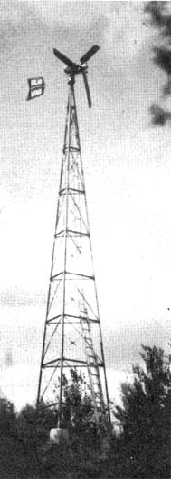

Hello! We're actually alive and well and living on (off?) the land in East Holden, Maine. We have 50 acres here that include an old orchard, a trout stream, large vegetable garden and our own 950-foot mountain. We built (mostly through last winter) a small house on the farm and moved in during the spring.
Bringing power to our homestead would have cost $3,000 or more (we're five miles from the nearest paved road) plus a minimum bill of $15 per month for the next five years . . . so, instead, we paid $1,800 and I spent many hours this summer setting up a complete and self-contained wind-generated electrical system.
The propeller and generator are from Quirk's in Australia and-to my knowledge-ours is the first large Quirk's unit to be installed in the U.S. It's a 2,000-watt, 120-volt, low-speed, geared alternator with a 12-foot diameter full-feathering propeller mounted atop a 50-foot steel tower. Other components in the system include 20 six-volt, 180 amp-hour "house lighting" batteries with built-in charge indicators, an automatic transistorized voltage control and various rectifiers and inverters designed to yield 120 volts A.C. or D.C.
And it all seems to work! Since our system was put into operation a month ago, we've had uninterrupted power for lights, shop tools, water pump, hi-fi and-yes-even television . . . which is quite a change from candles and kerosene lamps!
We're so enthusiastic that we've formed a company to import Quirk's windplants and I'm now the official agent for the units in the northeastern states (which is all of New England and New York). Our company, Solar Wind, will eventually be expanded to produce and sell plans and kits for simpler, less expensive wind generators, solar heating units (hot water heaters) and other alternative energy devices for homesteaders and country folk.
This letter, by the way, was inspired by Ed Trunk's terrific article on wind power in MOTHER NO. 17. Except for the fact that Ed didn't mention Quirk's, it's a great piece and packed a lot of information into a small space. My only comment is that, while Ed isn't very enthusiastic about wind power as a practical source of energy on a large scale, I am. The feeling of running a whole shop, lights and appliances (with the stereo blaring away in the background) on a totally invisible, non-polluting and free power source is nothing short of exhilerating. NOTE: This letter was typed on a SCM electric typewriter operating on 120 volts A.C. . . . supplied entirely by our wind-driven rig!
OK. All you lovely chilluns that want to harness the wind right out there on the ole homestead. Hank Clews has done it and he's actively trying to help others do it too. Although he's just getting set up, Henry probably knows a heck of a lot more than you or I do about self-contained wind-powered farm and home electrical systems and, since I happen to know that Hank is both a Good Guy and an engineer, he's probably one of the best sources of information on the subject in the country today. He's also a struggling homesteader too, so-if you want to pick his brain-send a buck or two along with your query. Maybe, if enough of us do that, Henry will be forced to print up an information packet or a handbook on the subject. Send that dollar (or two!) and your request for information to:
SOLAR WIND R.F.D. 2,
Happytown Road
East Holden Maine 04429
|
 |
|
|